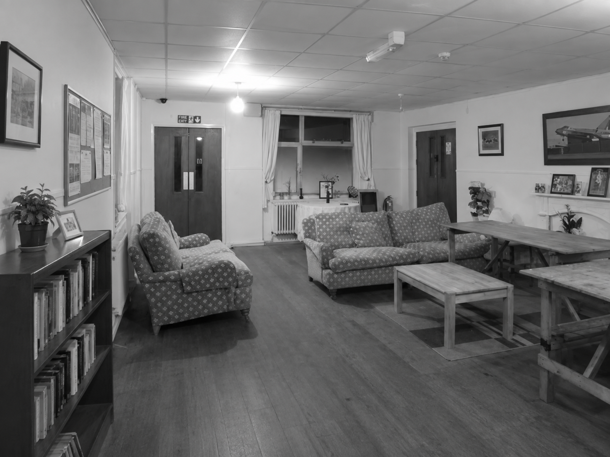
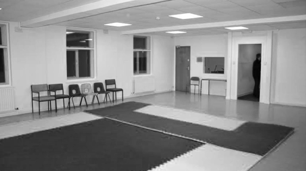
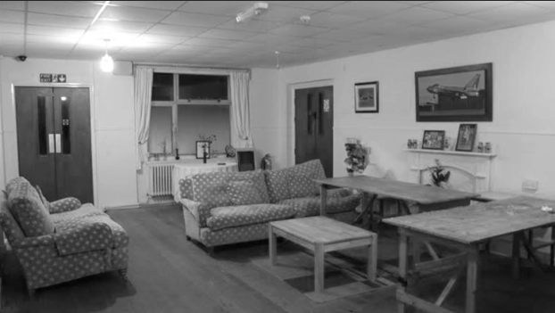
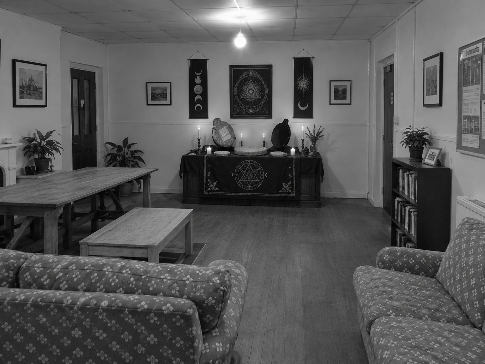

GuiaWeb 2000
Seu guia de páginas na internet
Seu guia de páginas na internet
Seleção de páginas sobre tradições, símbolos e assuntos pouco documentados.
An independent directory of unusual material on the World Wide Web
Indexed transcriptions, incomplete scans, and material submitted without provenance.
The compiler cannot verify the safety or authorship of items in this collection.
This message board is archived irregularly. Some threads may no longer respond.
Incomplete visual records of occupied, abandoned, and otherwise altered sites.
Scans listed without sequence. File dates are inconsistent.




Room view, file origin uncertain.
Sign my guestbook · View guestbook
Webmaster unavailable. Please do not resend requests.